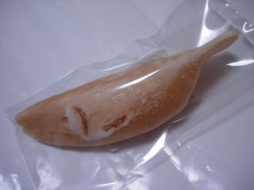
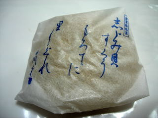
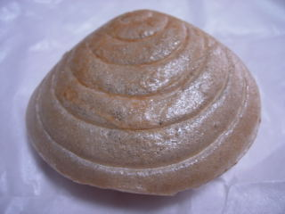
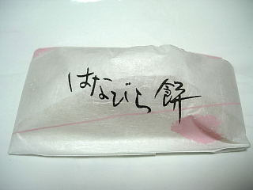
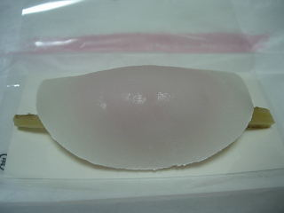
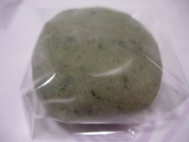
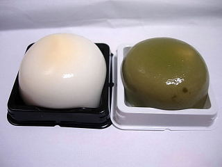
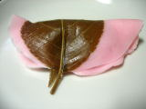

風月堂の和三鮎
2010/08/03
風月堂で小さいお菓子を買いました。1つ63円です。

鮎の格好をした最中のようなものの中に、生姜と和三盆糖が入ったお菓子です。
生姜が効いてて爽やかでした。夏菓子でした。
生姜って体を温めるって言う人と冷やすって言う人がいるので、どっちかよく解からないんですが、これを食べたら冷やす方が正しいのかなと思いました。
販売者は京都の嘉楽本舗さんみたいです。
島根県出雲市平田町486-1
2010/08/03
風月堂で小さいお菓子を買いました。1つ63円です。

鮎の格好をした最中のようなものの中に、生姜と和三盆糖が入ったお菓子です。
生姜が効いてて爽やかでした。夏菓子でした。
生姜って体を温めるって言う人と冷やすって言う人がいるので、どっちかよく解からないんですが、これを食べたら冷やす方が正しいのかなと思いました。
販売者は京都の嘉楽本舗さんみたいです。
2010/7/11
地元名産の「しじみ」の名前が付いたお菓子ですね。

原材料にしじみと書いてなかったので、格好だけの商品だと思います。

しじみにしては大きなサイズでした。
薄い皮の中になはたっぷり餡が入っていました。なのでとっても甘いです。
格好が面白いので、お客さんに出すのにいいお菓子だなと思いました。
2010/1/1
紙の袋に個包装されてて、ちょっと高級感がありお正月にいいですね。

お餅が多めのはなびら餅でした。

ゴボウや餡のクセが少なく、お餅の味がメインになってました。もちもちとしていて、お団子の様な感じがしました。クセがなくて食べやすかったです。
2009/2/1
ちょっと小さめのよもぎ餅です。

つぶ餡がいっぱい入っているんですが、大きさが小さいですし、塩味が効いていているので甘すぎず、さっぱりとパクっと食べれました。いいあんばいですね。
2008/8/10
風月堂のふるふると抹茶ふるふる
ラピタ本店で買いました。今まで坂根屋さんがあった所に風月堂さんが入られました。

和菓子の水菓子の中にクリームが入ってます。ちょっと洋菓子っぽいですね。
ミルク味全開のふるふると、抹茶が入ってちょっと爽やかな抹茶ふるふるの2種類がありました。
甘いですけど、食感が柔らかくて食べやすかったです。
2007/12/23
年末なのに、もうさくら餅って販売してるんですね。ちょっと意外でした。
餡も、餡を包んでる衣もしっとりしてて柔らかいです。その上、こしアンと衣のキメが細かく、なめらかな食感がとても良かったです。

さくらの風味や塩加減もほどよくあって、美味しかったです。
2006/7/1
見た目がペッタンコで、中の具があんまり入ってないのがわかるので、買うかどうか迷いました。でも、カスタード入りのワッフルのほかに餡入りワッフルがあって、変わってたので挑戦してみました。
ワッフルの感想ですが、やっぱり見た目どうり中の具が少ないので、カスタードにしても餡にしてもちょっと寂しいなーってのは正直ありました。一口目を食べた時に甘い部分にとどかないっていうのは、食べててかなりガッカリです。
ワッフル生地は明るくて綺麗な色をしているので、軽い味をイメージしたんですが、食べてみるとバターっぽい感じがしました。なのでカスタード版も餡版もちょっと独特な味です。これがシンプルな味だったら餡版は普通にどら焼きなんでしょうけど、そうなってないのはいいですね。
この独特なバター味は、ちょっとベルギーワッフルっぽいのかな？って感じもします。オリジナル感がある商品になってるので、これはこれで良いですね。
2006/1/26
平田の和菓子屋さん「風月堂」のみたらし団子を食べました。
あいかわらずおいしいお団子でした。
団子の一個一個がしっかり分かれてるし、もちもち感がとってもいいです。
団子らしい柔らかい食感を残しつつ、密度がしっかりあり、それでもってじっとりとしてないのがとってもいいです。
大手メーカーの団子とは全然食感が違いますね。
食べだすと、もっと食べたいって気分にさせてくれます。
2005/8/8
出雲市平田町にある風月堂の「ふるふる」を食べました。
「ふるふる」って名前のとうりとってもふるふるな商品で、ミルク味のくずもちの中にカスタードクリームが入っていて、外側も内側もやわやわです。
ミルクとカスタードクリームの組合せなので、無難に美味しいかったです。
2005/6/20
出雲市平田町にある風月堂のみたらし団子を食べました。(買ったのはラピタ平田店です。)
表面がかるくあぶってあるので、団子が口にあたった瞬間さらさらしていていい食感でした。そのさらさら感をだすためか、たれの量がちょっと少なめになってます。たれが少ない分、醤油風味が強めにしてあって、砂糖甘いだけじゃないいい香りと味がします。
バランスが良く出来てますね。とってもおいしかったです。今度はお店に買いに行きたいです。